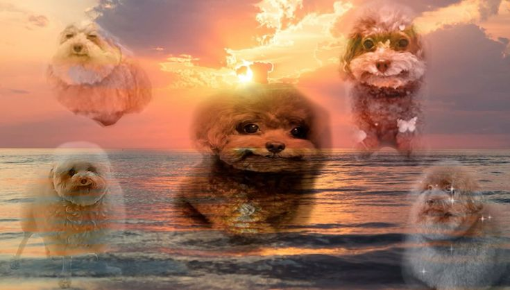

welcome to my website
who what why
made by andraguoso, andraguoso @neocities is a fun cool exceptional page that aims to be a source of pleasure entretainment for its creator
quick fast rapid
- i am a south american high schooler who wants to major in cs + some social science (psych or phil)
- i have a pretty basic knowledge of webdev thanks to kwk, and im planning to apply again because my xp was spectacular (if you want to be part of women-led spaces in tech it's a nice place to start)
-
i like microwave baking a lot and i included that in my m(it)2 app. i was cooked but it was fun
nonetheless!
m(it)2 winter 25 beginner archive
ACC as of now 29 mar, i've qualified for the second round of the spring 26 contest! very happy about this c: - music is laif and even though everybody and their mom says that i did invest my time listening to each artist's body of work. yea my niche is not your niche! anyways my lastfm i check it daily and recently discovered you can add friends in there...
go move pass
farewell!